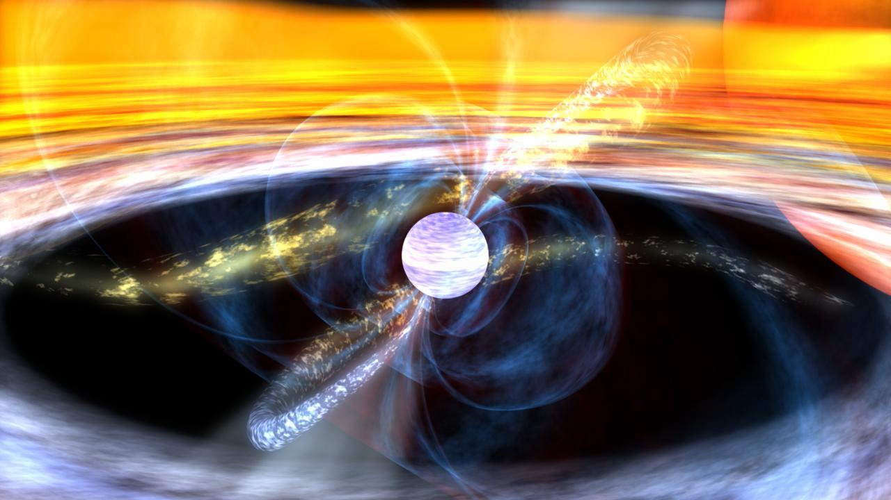

Pulsars

What is a Pulsar?
At the end of very high mass star’s lifecycle it can explode, leaving behind a different type of star known as a neutron star. If the name sounds familiar from your Chemistry lessons, that’s because these stars are made up of almost entirely neutrons. They are very small and have a very large mass, making them extremely dense. A pulsar is a specific type of neutron star. Unlike stars like the sun, they don’t shine light in all directions, instead they emit in two beams. Pulsars also spin very quickly. This means that the beams of light sweep across space like a lighthouse. At Earth we can detect pulsars as flashes of light as the beam passes by. We refer to these flashes as pulses – which is where the name Pulsar comes from.
Pulsar's aren't the only type of neutron star. All neutron stars have magnetic fields, but some have much stronger ones than others. These are called magnetars and they have fields around 1,000 times stronger than their regular counterparts.
As astronomers we split pulsars into two main groups, depending on the wavelength they emit:
Radio
X-ray
Fun facts:
When the pulses were first discovered some scientists thought they might be coming from an alien civilization.Pulsars are very dense. The values in the table below are taken from a pulsar named 'PSR J0740+6620' - catchy we know! Can you calculate the density of this spherical pulsar? Using this, can you work out how much a mug of the material it's made of would weigh? You can assume the mug is a cylinder, with a radius of 4cm, and a height of 9cm. For comparisson we can do similar calculations with mount Everest and find it has an approximate mass of 1.62x10^14kg.
| Name | Mass | Radius |
|---|---|---|
| PSR J0740+6620 | 4.28 x 10^30kg | 30km |
Left:A diagram of a pulsar surrounded by white lines representing the magnetic field it produces. The two jets of radiation project outwards. Image credit: Roy Smits